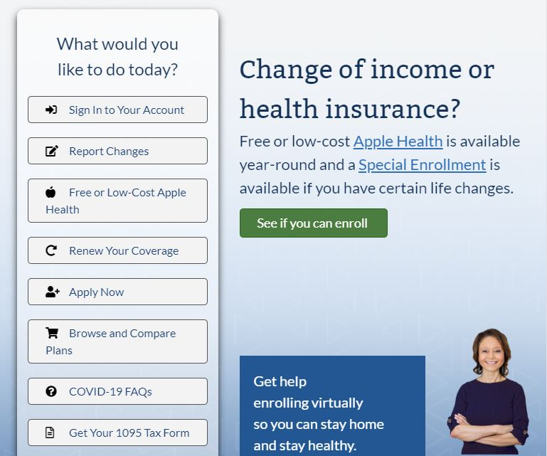
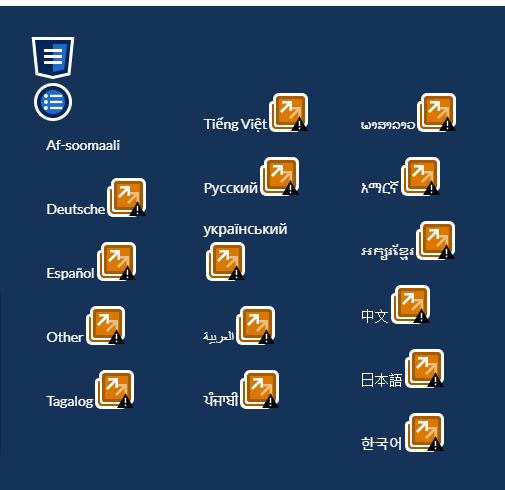

Introduction
Washington Health Plan Finder is a website designed for low-income Washington residents to easily find health insurance plans through Apple Health. Due to its large target audience, one would expect the website to be highly accessible for disabled and marginalized citizens to be able to learn to use it without too much trouble.
Methodology
I am using the Web Accessibility Evaluation Tool (WAVE) to scan the HTML markup and reach some conclusion about the advantages and setbacks of the website based on knowledge of WCAG 2.1 guidelines.
The Surface
From the get-go, we can tell that the website is designed in a considerate manner by having short-and-sweet titles, a number of call-to-action buttons to navigate and a simple visual style.
Positives
Looking through the WAVE results, I was able to detect 24 counts of alt text used on the home page alone. There are also 36 Structural Elements, mostly consisting of unordered lists for navigational menus. This shows consideration for those using screen readers who may need to cycle through these options.
Negatives
There were 14 errors detected, although they were mostly broken ARIA references. 4 of them were low contrast text. Using the WebAIM Color Contrast Checker, I found that the text had a contrast ratio of 3.37:1, which fails WCAG AAA guidelines.
There were also 35 Alerts, though most of these were minor. Notably, the site has no headings whatsoever, and scanning through the HTML confirmed this. This may not bode well for screen readers.
Recommendations
My first recommendation is to fix the low contrast text. This is the easiest change that would impact the most people. Secondly, making sure there are headings properly placed in hierarchy. Lastly, I noticed the language selection were found to be "redundant links", which initially made sense to me considering they redirect to the same page.
Even though the nav element has a "navigation" attribute, it seems that the list elements won't be read out due to being in different languages and not having alt text associated with them. I would add an alt text in case screen readers aren't able to say that it's a language selection and/or cycle through the language options.